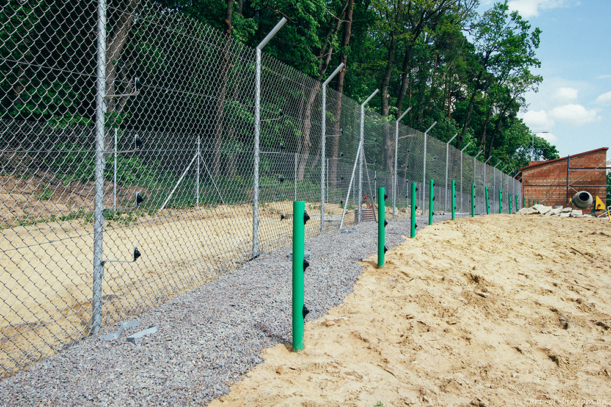
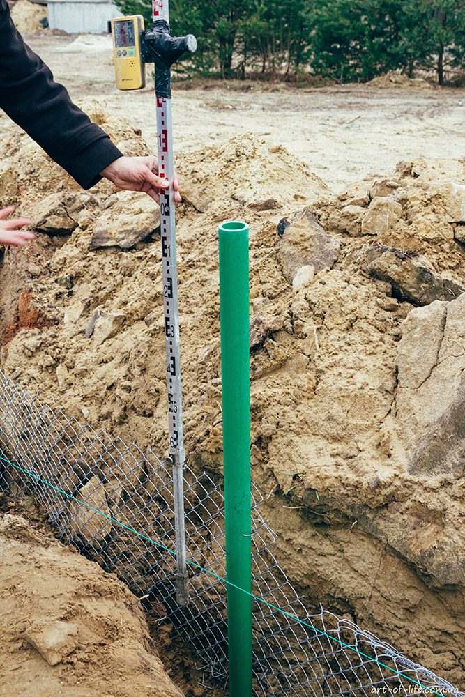
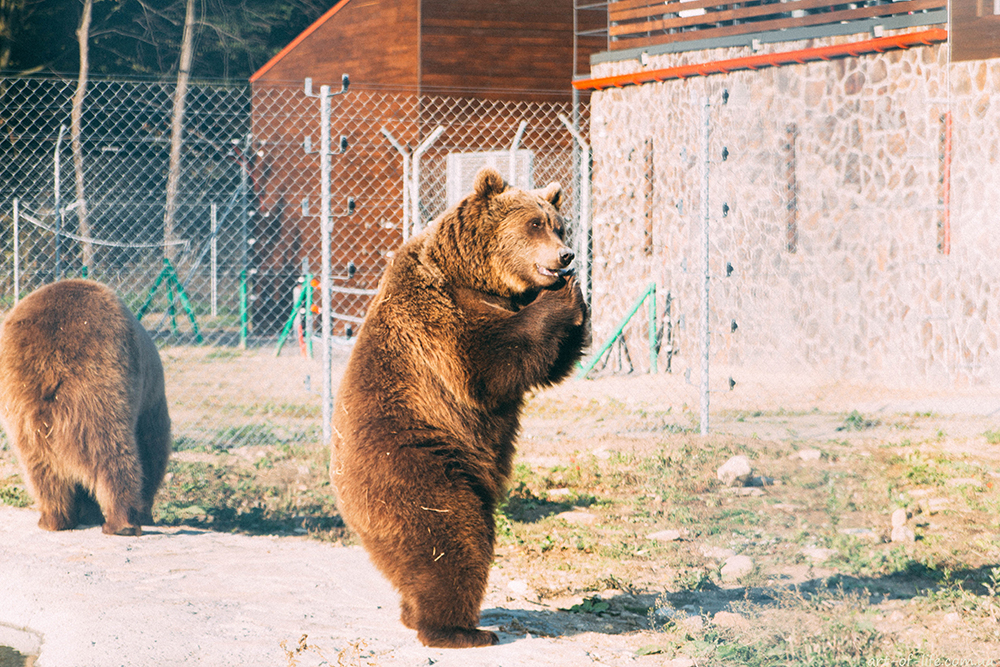
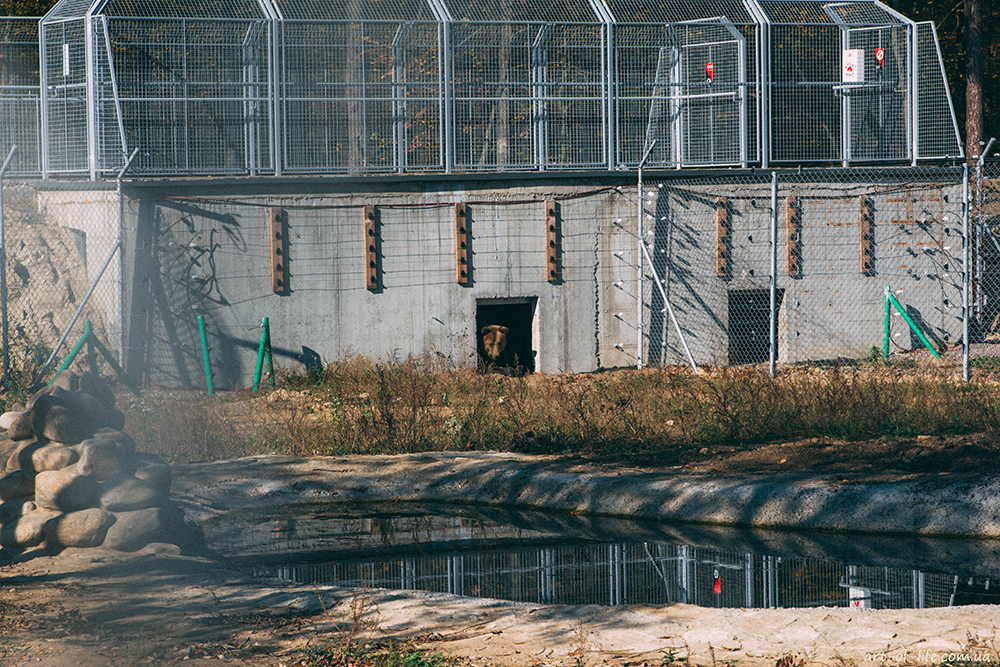
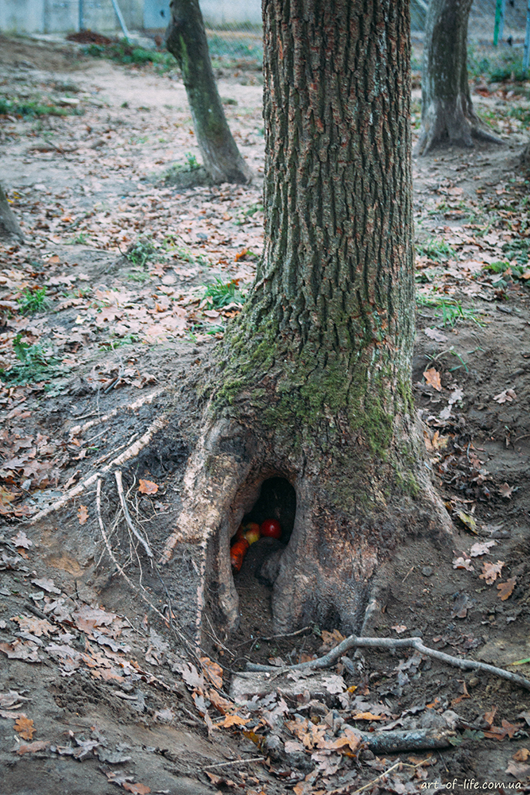
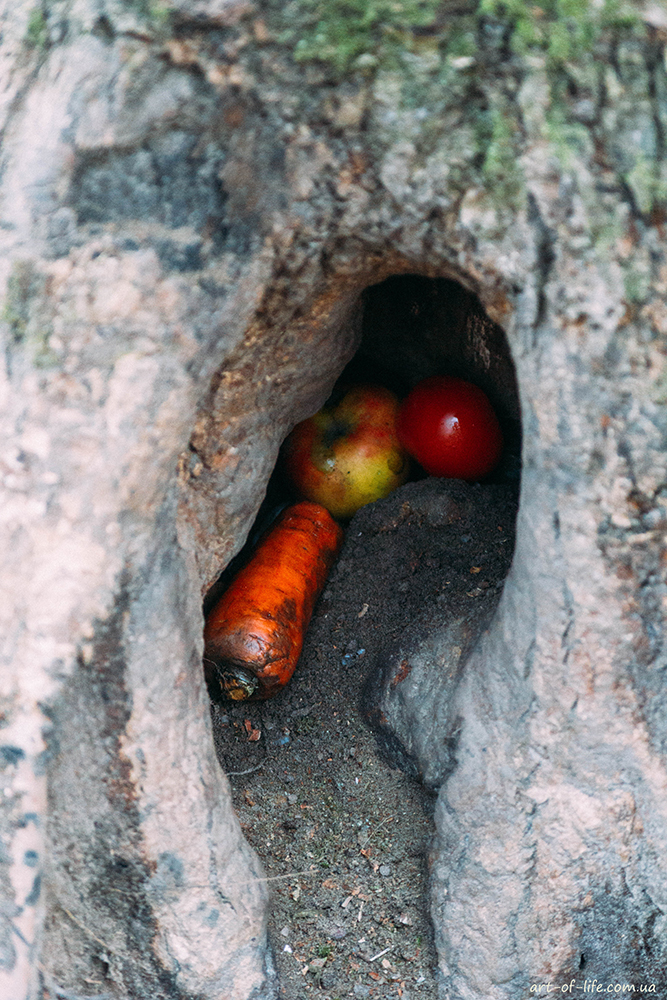
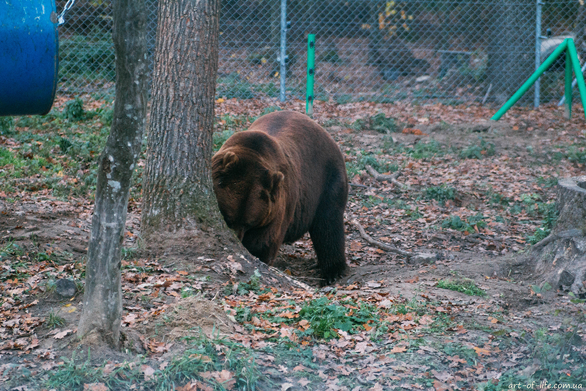
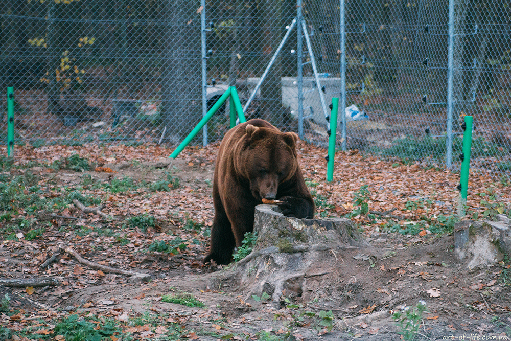
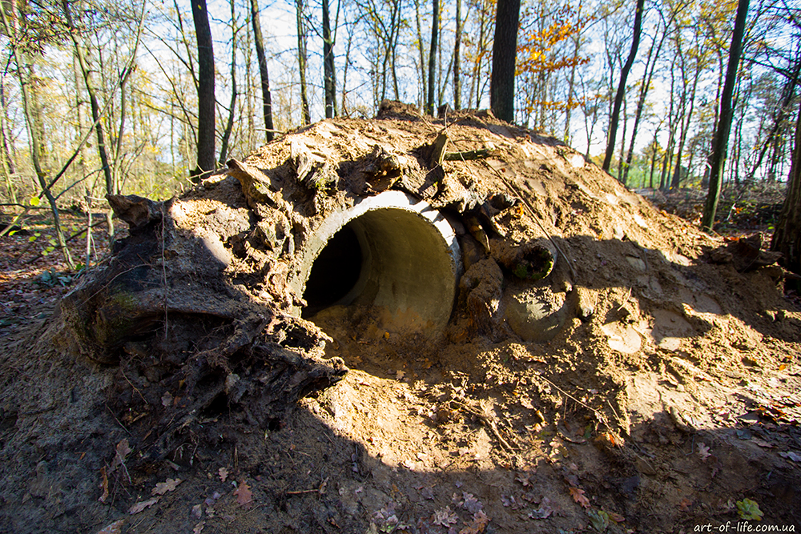

Про роботу у ВЕДМЕЖОМУ ПРИТУЛКУ Домажир. Частина 2: безпека, харчування, сплячка
У минулому пості я розповіла про роботу ВЕДМЕЖОГО ПРИТУЛКУ Домажир та стан утримання ведмедів в неволі в Україні. Сьогодні продовжу свою розповідь і заглиблюсь у цікаві факти про життя клишоногих.
БЕЗПЕКА
Молоді ведмеді прекрасно лазають по деревах. А ще ведмідь здатний розвивати швидкість до 50 км/год. А ще вони руйнують бетонні барлоги :) А ще вони обожнюють досліджувати навколишній світ і їм усе цікаво. Як думаєте, чи зупинила б цих тварин проста сітка?
Саме тому усі вольєри ідуть під струмом – 10 000 вольт. Така напруга при контакті викликає у ведмедя дуже неприємні відчуття. А позаяк він є надзвичайно розумною твариною, то 2-3 контактів для нього достатньо аби запам’ятати, що торкатись сітки зі струмом не варто.
Також ведмеді чудово риють землю. Вони можуть робити підкопи задля цікавості або рити барлоги (на схилах). Тому окрім звичайної огорожі, у вольєрах встановлена ще антипідкопна сітка під землею.
У притулку є свої правила безпеки, періодично тут організовується відповідне навчання. Доглядачам забороняється прямий контакт із ведмедями. Як-не-як, це дика тварина і часом вона може бути непередбачуваною.
Проте, між доглядачами і ведмедями відбувається постійний тренінг. Тварини в гарному психологічному стані позитивно реагують на працівників, відгукуються на ім’я і навіть здатні вивчити певні команди в обмін на щось смачненьке. Наприклад, можна навчити ведмедя ставати на задні лапи задля поверхневого медичного огляду. До речі, в природі ведмідь стає на задні лапи не для того, щоб когось налякати. Йому все цікаво і він хоче краще роздивитись те, що відбувається навколо.
Щоб нагодувати тварин чи прибрати у вольєрах, доглядачі кличуть ведмедів у спеціальну будівлю (bear house). Коли ведмідь заходить до свого бокса (а він заходить дуже швидко, бо знає, що тут отримає рибину), доглядач закриває бокс. Опісля – з вольєру знімається напруга і працівник може зайти туди всередину, щоб розкласти їжу, прибрати, полагодити чи встановити нові іграшки тощо.
По закінченню усіх необхідних процедур, працівник здійснює ряд протилежних дій – замикає вольєр, перевіряє і вмикає напругу, відкриває бокс та випускає ведмедя. На перший погляд, це не надто складний налагоджений процес, проте він потребує максимальної уваги.
ХАРЧУВАННЯ І ХВОРОБИ
Переважно усі ведмеді, які потрапляють до притулку після неволі, мають проблеми зі здоров’ям. Практично у всіх є проблеми з зубами через неправильне харчування (в ресторанах відвідувачі полюбляють пригощати ведмедів цукерками, колою і навіть алкоголем).
У більшості спостерігається стереотепія (повторювання одного і того самого руху). Можуть бути проблеми із зором, зростом, вагою тощо. В притулку також живе ведмедиця із сильним цирозом (попередній власник споював тварину алкоголем для того, щоб вона проявляла менше агресії). В Житомирі (притулок «Біла Скеля») живуть ведмедиці, яких навмисне осліпили в цирку.
Коли Христя потрапила до притулку, вона дуже часто “танцювала”. Це ненормальна поведінка для ведмедя, вона свідчить про психологічні проблеми і стрес. Найчастіше Христя танцювала, коли поряд знаходились люди. Зараз ця поведінка майже зникла.
У ВЕДМЕЖОМУ ПРИТУЛКУ Домажир ведмеді отримують спеціальний та збалансований раціон і у кожної тварини він індивідуальний. Переважно це сезонні овочі-фрукти + горіхи, мед (в невеликих кількостях), чорний хліб, риба, біле м’ясо, яйця. У кожного ведмедя є своя добова норма (в кг), яка змінюється, залежно від сезону. Восени у ведмедів значно збільшується апетит і якщо тварина планує залягти у сплячку, то вона може споживати до 30 кг їжі на день. Ба більше, у кожного ведмедя є свої вподобання. Наприклад, хтось обожнює апельсини і не їсть яблука, а хтось взагалі був у минулому вегетаріанцем.
Просто так смаколики ведмеді теж не отримують. Доглядачі ховають продукти у спеціальні іграшки або використовують природні об’єкти (каміння, дерева).
 Це робиться для того, щоб тварина відпрацьовувала та пробуджувала природні інстинкти з пошуку їжі.
Також іграшки працюють, як своєрідна математична задача: ведмідь має зрозуміти яким чином провернути чи прокрутити забавку, щоб дістати смаколик. Це дає змогу тварині не деградувати та розумово розвиватись.
Відвідувачам, як Ви вже могли зрозуміти, годувати ведмедів в притулку не можна. Окрім вище зазначених причин, можна додати, що ведмеді стають «попрошайками» і це не є добре. Чесно кажучи, дивуюсь людям, які обурюються цьому правилу, адже ВЕДМЕЖИЙ ПРИТУЛОК – це не зоопарк і не розвага. Люди мають бачити те, що робиться зараз в Україні з дикими тваринами. Мені дуже хочеться, щоб люди змінювали фокус мислення і думали ширше…
МЕДИЦИНА
Періодично до притулку приїздять провідні ветеринари з Four Paws, які оглядають тварин та лікують їх. Переважно ведмедям роблять УЗД, лікують зуби тощо.
Однією з найпоширеніших операцій є кастрація.
Чому?
- Перш за все, притулок не має на меті розмножувати ведмедів. Тут рятують тварин, які вже постраждали від людської жорстокості. Ведмежат, на жаль, не випустиш на волю, адже свої перші три роки вони проводять з мамою. Опісля – для них знадобляться нові вольєри, на які вже претендують близько 200 страждаючих клишоногих. В неволі ведмежата знову ж таки не навчяться виживати.
- Ведмідь за природою одинак і утворює пару раз на декілька років. Союз триває до двох тижнів.
- Кастрований ведмідь виявляє менше агресії та довше живе.
СПЛЯЧКА
Багато людей питають чи ведмеді залягатимуть в притулку в сплячку. Відразу скажу, що в неволі ведмеді не сплять. АЛЕ. Якщо тварина почуває себе добре, безпечно та комфортно, якщо тварина набрала достатньо ваги – вона заляже в сон. Для цього в притулку доглядачі будують барлоги. Основа – з бетонних кілець, зверху – коріння та земля, всередині – тепла натуральна підстилка.
Барліг має бути теплим та затишним. Він не має протікати і тут не має бути протягів. Адже чийсь сон мусить бути тут комфортним і міцним протягом кількох місяців.
Насправді зимова сплячка не обов’язково має тривати усю зиму. Ведмедя досить легко збудити шумом (тому притулок взимку не працюватиме для відвідувачів). Також ведмідь може прокидатись і знову засинати. Усе залежить від зими та жирових запасів. Під час сну ведмідь може худнути на 80 кг.
В природі, під час зимової сплячки, на Новий рік, у ведмедиці народжуються ведмежата. Самка прокидається, коли малята вже з місяць-два смокчуть її молоко. Потім ведмежата ходять з мамою впродовж 3 років і вчаться від неї усім ведмежим примудростям (пошук їжі, виживання тощо). Після 3 років ведмежата стають дорослими і розпочинають самостійне життя поза межами своєї групи.
Насправді про ведмедів можна говорити ще дуже довго, але залишу інформацію для наступного запису :) Вже скоро я розповім про процес трансферу ведмедів до притулку і про кожного його мешканця зокрема. Слідкуйте за оновленнями :)